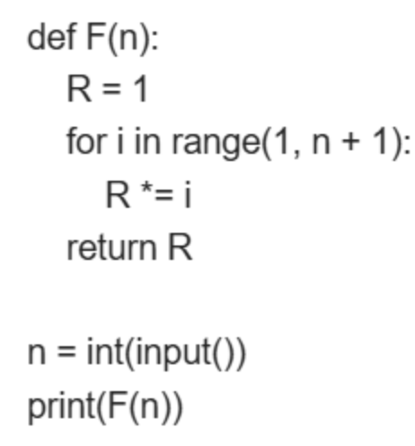

Q1. 파이썬에서 변수값을 절대값으로 변환하는 함수로 올바른 것은?
1. float()
2. abs()
3. max()
Q2. 파이썬에서 한 줄에 공백으로 기준으로 숫자 2개를 입력받아 a, b에 각각 저장하는 코드로 올바르지 않은 것은?
1. a, b = map(int,input().split())
2. a, b = map(float,input().split())
3. a, b = int(input())
Q3. 파이썬에서 다음중 조건문을 표현하기 위해 사용하는 것은?
1. if
2. end
3. print
Q4. 파이썬에서 다음중 반복문이 아닌 것은?
1. for
2. range
3. while
Q5. 파이썬에서 아래 코드를 보고 입력값이 3일때 출력값으로 올바른 것은?

1. 1.24
2. 2.2
3. 3.6